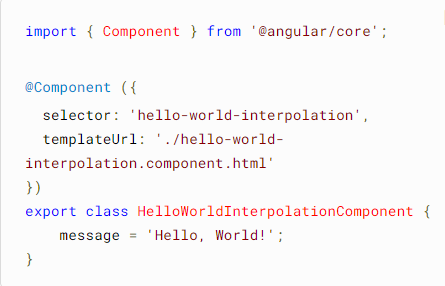
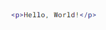
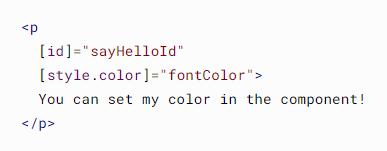
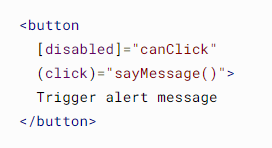
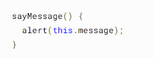
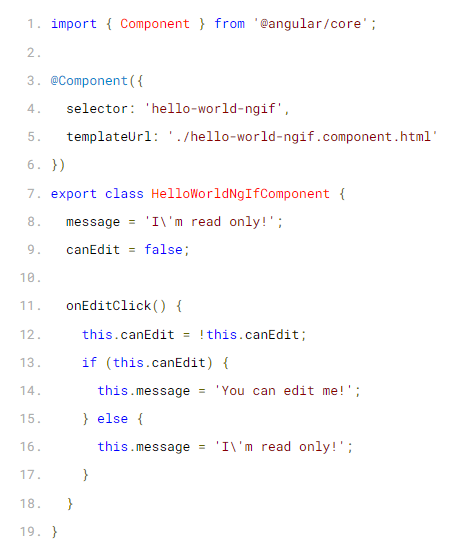

<main style="background-color: rgba(216, 216, 216, 0.398);">

    <div id="accordion">
        <div class="card">
            <div class="card-header" id="headingOne">
                <h5 class="mb-0">
                    <button class="btn btn-link" data-toggle="collapse" data-target="#collapseOne" aria-expanded="true"
                        aria-controls="collapseOne">
                        <h3> Sobre o Angular </h3>
                    </button>
                </h5>
            </div>

            <div id="collapseOne" class="collapse show" aria-labelledby="headingOne" data-parent="#accordion" style="background-color: rgba(216, 216, 216, 0.398);">
                <div class="card-body">
                    <p>O <strong> Angular </strong> possui alguns elementos básicos que tornam essa construção
                        interessante. Dentre os principais, podemos destacar os componentes, templates, diretivas,
                        roteamento, módulos, serviços, injeção de dependências e ferramentas de infraestrutura que
                        automatizam tarefas, como a de executar os testes unitários de uma aplicação.</p>

                    <p> Angular nos ajuda a criar Single-Page Applications com uma qualidade e produtividade
                        surpeendente!</p>

                     <br>

                    <p>Como plataforma, o Angular incluirá:</p>

                    <ul>
                        <li> Uma estrutura baseada em componentes para a construção de aplicativos da web escaláveis
                        </li>
                        <li> Uma coleção de bibliotecas bem integradas que cobrem uma ampla variedade de recursos,
                            incluindo roteamento, gerenciamento de formulários, comunicação cliente-servidor e muito
                            mais </li>
                        <li> Um conjunto de ferramentas de desenvolvedor para ajudá-lo a desenvolver, construir, testar
                            e atualizar seu código </li>
                    </ul>

                    <p>O angular permite que você aproveite a vantagem de uma plataforma para desenvolovimento de
                        projetos onde, através de um único desenvolvedor, você atinja níveis empresariais de
                        desenvolvimento. O Angular foi projetado para tornar sua utilização o mais simples possível com
                        um mínimo de esforço empregado para tal.</p>

                </div>
            </div>
        </div>

        <div class="card">
            <div class="card-header" id="headingTwo">
                <h5 class="mb-0">
                    <button class="btn btn-link collapsed" data-toggle="collapse" data-target="#collapseTwo"
                        aria-expanded="false" aria-controls="collapseTwo">
                        <h3> Do que o Angular é composto ? </h3>
                    </button>
                </h5>
            </div>
            <div id="collapseTwo" class="collapse" aria-labelledby="headingTwo" data-parent="#accordion" style="background-color: rgba(216, 216, 216, 0.398);">
                <div class="card-body">
                    <p>Compreender as idéias por trás do Angular, poderá ajudá-lo a projetar e cnstruir seus aplicativos
                        de forma mais eficaz</p>

                    <h5> <b> Mas afinal, do que o Angular é composto ? </b> </h5>

                    <p>O desenvolvimento em Angular exige a utilização de componentes e modelos</p>

                    <h6> <b> Componentes: </b> </h6>
                    <p> Os componentes são os blocos de construção que compõem um aplicativo e eles são identificados
                        com o decorator @Component. Um componente inclui uma classe TypeScript com um decorador, um
                        modelo HTML e estilos CSS. Neste decorator existem algumas propriedades mais utilizadas como:
                        selector, templateUrl e style. Quando analisado a estrutura de um componente, podemos dividi-lo
                        da forma que iremos analisar agora: </p>
                    <ul>
                        <li> <b> Metadata </b>: são definições que iremos informar ao Angular que a nossa classe é um
                            Component, por meio de decorators, nesse caso @Component</li>
                        <li> <b> Classe </b>: assim como em qualquer linguagem de programação que utiliza o paradigma da
                            orientação a objeto, possui suas propriedades e métodos. Um Component é um tipo de classe existente em uma aplicação Angular, eles são identificados com o decorator @Component. Neste decorator existem algumas propriedades mais utilizadas como: selector, templateUrl e style 
                        </li>
                        <li> <b> Selector </b> é como identificamos o nosso componente. Para todo o componente existe um
                            elemento único associado que permite que ele seja adicionado em um documento HTML. Nesse
                            caso, o nome do elemento desse componente é cadastro e deve ser escrito como cadastro</li>
                        <li> <b> TemplateUrl </b> é o nome do documento HTML que será a parte visual do componente. Nele
                            podemos ter código em HTML juntamente com todos os bindings e diretivas necessários para a
                            exibição do componente no navegador</li>
                        <li> <b> Template </b> também usado para descrever a parte visual do componente, porém nesse
                            caso podemos fornecer código HTML "hard coded", como texto </li>
                        <li> <b> styleUrl </b> é onde informamos quais folhas de estilo contêm o código CSS que será
                            aplicado ao template do componente. </li>
                    </ul> <br>
                    <p> Com isso podemos concluir que a estrutura de um componente Angular deve ser formada por esses
                        três elementos, template (HTML), estilo (CSS) e classe (TypeScript). Essas partes são
                        organizadas em arquivos separados e unidas nos metadados do componente através do decorator
                        @Component </p>

                        <hr>

                    <h6> <b> Modelos: </b> </h6>

                    <p>Cada componente possui um template HTML que declara como aquele componente é renderizado. Você
                        define este modelo embutido ou por caminho de arquivo.</p>

                    <p> Angular estende HTML com sintaxe adicional que permite inserir valores dinâmicos de seu
                        componente. O Angular atualiza automaticamente o DOM renderizado quando o estado do seu
                        componente muda. Uma aplicação desse recurso é a inserção de texto dinâmico, conforme mostrado
                        no exemplo a seguir.</p>
                    
                        

                        <p>O valor da mensagem vem da classe do componente:</p>

                        

                        <p>Quando o aplicativo carrega o componente e seu modelo, o usuário vê o seguinte:</p>

                        

                        <p> Observe o uso de colchetes - essa sintaxe indica que você está associando a propriedade ou atributo a um valor na classe do componente.</p>

                        <p> Declare ouvintes de eventos para ouvir e responder às ações do usuário, como pressionamentos de tecla, movimentos do mouse, cliques e toques. Você declara um ouvinte de evento especificando o nome do evento entre parênteses: </p>

                        

                        <p>O exemplo anterior chama um método, que é definido na classe do componente:</p>

                        

                        <p>A seguir está um exemplo combinado de interpolação, associação de propriedade e associação de evento em um modelo angular:</p>

                        

                        <p>Os modelos declarativos do Angular permitem separar claramente a lógica do seu aplicativo de sua apresentação. Os modelos são baseados em HTML padrão, para facilitar a construção, manutenção e atualização quando utilizado</p>

                        <h6> <b> Diretivas:</b> </h6>

                        <p>Diretivas são classes dentro do Anglar que auxiliam no comportamento dos elementos em sua aplicação Angular. As Diretivas são usadas dentro do Angular para gerenciamento de estilos em formulários, listas e tudo mais que o usuário vê. </p>

                        <p>As principais Diretivas de atributos usadas no Angular são:</p>
                        <ul>
                            <li>NgClass- adiciona e remove um conjunto de classes CSS.</li>
                            <li>NgStyle- adiciona e remove um conjunto de estilos HTML.</li>
                            <li>NgModel- adiciona vinculação de dados bidirecional a um elemento de formulário HTML.</li>
                        </ul>
                </div>
            </div>
        </div>


        <div class="card">
            <div class="card-header" id="headingTwo">
                <h5 class="mb-0">
                    <button class="btn btn-link collapsed" data-toggle="collapse" data-target="#collapseTwo"
                        aria-expanded="false" aria-controls="collapseTwo">
                        <h3> Mas afinal, o que é uma SPA e uma MPA? </h3>
                    </button>
                </h5>
            </div>
            <div id="collapseTwo" class="collapse" aria-labelledby="headingTwo" data-parent="#accordion" style="background-color: rgba(216, 216, 216, 0.398);">
                <div class="card-body">
                    <p> <strong> Single Page Applications (SPA) </strong> são aplicações cuja funcionalidade está
                        concentrada em uma única página. Ao invés de recarregar toda a página ou redirecionar o usuário
                        para uma página nova, apenas o conteúdo principal é atualizado de forma assíncrona, mantendo
                        toda a estrutura da página estática.</p>

                    

                    <p>Assim como o nome surgere, uma <strong> Multi Application Page (MPA) </strong> é uma aplicação
                        que possuirá mais de uma página. Ela funciona de uma maneira mais tradicional, requerindo que a
                        aplicação seja recaregada inteiramente sempre que há uma nova solicitação de recarregamento toda
                        vez que o usuário interage com ela. MPA's geralmente possuem um grande volume de dados por trás
                        e uma arquiteura mais complexa</p>

                    
                </div>
            </div>
        </div>

    </div>
</main>